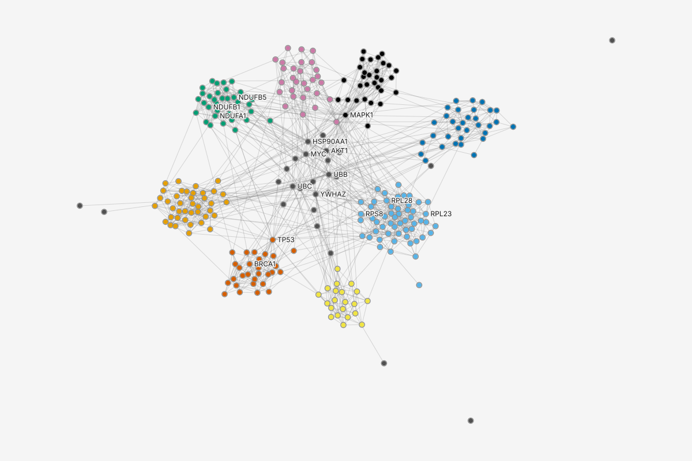
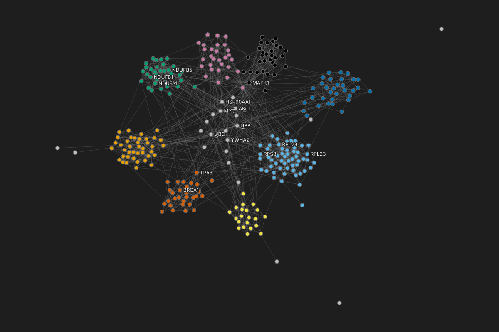

Module: color module
Ribosome56
Proteasome40
Complex I35
Spliceosome32
MAPK signaling31
DNA repair30
Cell cycle29
TGF-beta21
Other: Unassigned26
Labels: the 22 proteins with the most partners
7 more hidden where they overlap
Groups and styles is the style stack. Each row is one style layer and what it selects; order is paint order, and a higher row wins each property it sets. Hubs is a kept set with no paint: it still has a row, with an empty swatch and Paint off.
Table300 nodes, 1,262 edges (rows)View > Table